These are the words of our first Prime Minister, Jawaharlal Nehru, in his book 'The
Discovery of India', describing the diversity of India.
What are the diversities mentioned here?
•
Language
•
•
•
•
•
Culture
and Cultural Diversities
5
India is a land of vibrant colours, diverse languages, and rich traditions. From
the snow-capped Himalayas in the north to the vast seas in the south, each
region boasts its own unique culture. Our country is home to countless festivals
and music. Each diverse dance forms, tell varied stories of our
people. Yet, amidst this incredible diversity, there is a deep sense
of unity, strengthened by the inspiring life stories of great thinkers
and warriors. India’s true strength lies in its ability to embrace
differences and find unity in diversity.
Reference: 'The Discovery of India' (1946) - Jawaharlal Nehru
Page 60

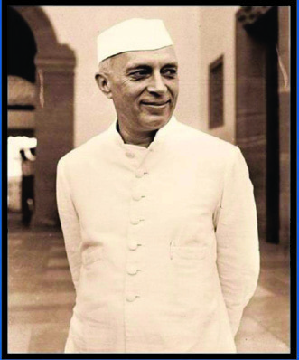
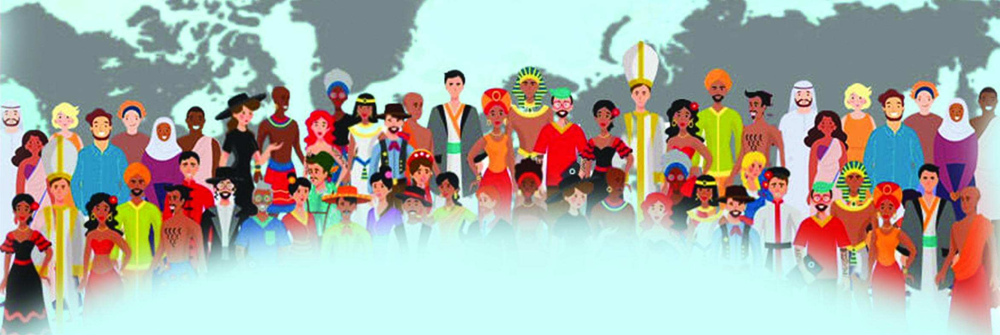
Page 61
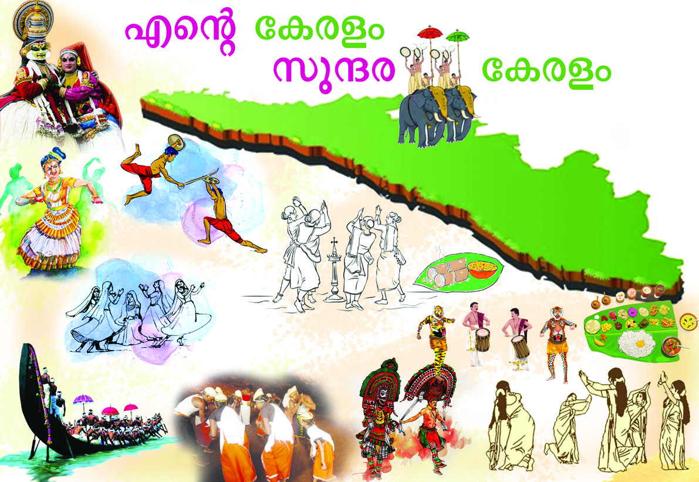

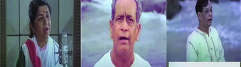
61
Social Science Class VI
Social Science Class VI
Culture and Cultural Diversities
Observe the brochure prepared
for “Keralapiravi” Day. Let us
also create a similar brochure.
Divide the class into different
groups. Prepare a digital
brochure on a state or on a
Union Territory of India and
present it in the class using the
facilities in the Social Science
Lab. Information about the
state’s language, clothing, art, festivals, entertainment, food, and more can be included.
These are a few lines of the song beginning with 'Mile Sur Mera' which was composed in
1988 to strengthen the national unity of India. The song is composed of lyrics in different
languages emphasising the concept of 'unity in diversity'. Just as different rivers merge
into a single ocean when diverse people, cultures and ideas come together, they create
a beautiful unity which reflects the message of this song. This unity is important not only
at the individual level but also at the societal level.
Find out Malayalam poems or songs reflecting national unity and present
as a group in class.
Mile sur mera tumhara, tho sur bane hamara
Mile sur mera tumhara, tho sur bane hamara
Sur kee nadhiyaan har disha se, behthe saagar mein milem
Sur kee nadhiyaan har disha se, behthe saagar mein milem
*
*
*
*
*
*
*
*
*
*
എന്റെź സ്വവരവുംംc നിിങ്ങളുുടെെ സ്വവരവുംംc, ഒത്തുുചേxർന്നുു നമ്മുുടെെ സ്വവരമാായ്്...
എന്റെź സ്വവരവുംംc നിിങ്ങളുുടെെ സ്വവരവുംംc, ഒത്തുുചേxർന്നുു നമ്മുുടെെ സ്വവരമാായ്്...
*
*
*
*
*
*
*
*
*
*
Page 62


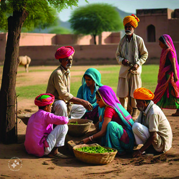


Social Science Class VI
Social Science Class VI
62
Part I
Rithi is a member of a Rajasthani family which came to Kerala for work and settled here.
Read the message shared by Rithi, for her friends who is a student of Govt. UP School,
Cholavanam.
Dear friends,
Dear friends,
How are things at our school? I came to my village to celebrate Hariyali
How are things at our school? I came to my village to celebrate Hariyali
Teej. We celebrate Teej in the month of Sravana (which is “Chingam” in
Teej. We celebrate Teej in the month of Sravana (which is “Chingam” in
Kerala). Don't you put up swings for Onam in Kerala? We also put up
Kerala). Don't you put up swings for Onam in Kerala? We also put up
swings here for Teej festival. New clothes, sweets, feasting at relatives'
swings here for Teej festival. New clothes, sweets, feasting at relatives'
houses, and so on are part of this festival.
houses, and so on are part of this festival.
We also celebrate Pushkar Mela and Gaja Mela. On such occasions, men
We also celebrate Pushkar Mela and Gaja Mela. On such occasions, men
wear turbans and coats. Women wear skirts, cholis (blouses), and sarees.
wear turbans and coats. Women wear skirts, cholis (blouses), and sarees.
I’ll tell you more about these when we meet. I’ll be back before Onam. I
I’ll tell you more about these when we meet. I’ll be back before Onam. I
will bring some of our special sweets made by us for all of you.
will bring some of our special sweets made by us for all of you.
2020
1414
• • • • •
→
Kilikoottam
Kilikoottam
What all similar features are there between the Onam festival in Kerala and the Teej festival
in Rajasthan?
•
•
What are the features found in Rajasthan that are different from Kerala?
•
•
•
We are familiar with some of the similarities and differences in the food, clothing, customs,
and celebrations of Rajasthan and Kerala. Many such features can be observed in each
state.
Ask your elders about the important festivals, languages, traditional clothing, food, arts
and crafts, monuments, and other cultural aspects of your area, and use the information
to complete the concept map provided below.
Page 63


63
Social Science Class VI
Social Science Class VI
Culture and Cultural Diversities
The features included in the description 'My Place' reflect the culture of our land. What
is culture?
Culture is defined in the opening lines of the book
'Primitive Culture' published by E. B. Tylor in 1871,
thus: Culture is ''that complex whole which includes
knowledge, belief, art, morals, law, custom and any
other capabilities and habits acquired by man as a
member of society''.
Socialisation
Socialisation is the learning process through which we learn how to behave
and interact within the society we live in. It begins at birth and continues
throughout our lives. Family, education, peers, media and so on are factors
that help in the socialisation process.
Our culture is formed by factors such as our food, clothing and language. The way
we think and act is also a part of culture. Culture is something we inherit traditionally
as members of society. All the achievements of humanity can be termed as culture.
Food
Food
•
•
Clothing
Clothing
•
•
Language
Language
•
•
Festival
Festival
•
•
Entertainment
Entertainment
•
•
Monuments
Monuments
•
•
My Place
E. B. Tylor
Based on the above concept map prepare a description titled 'My Place' and
upload it to the school wiki.
Culture is what sets humans apart from other species. Each individual is born into a
unique cultural context. It is through the process of socialisation, each individual acquire
their own culture.
Page 64


Social Science Class VI
Social Science Class VI
64
Part I
Art, music, literature, philosophy, religion, science and so on are all different components
of culture. All these are human made, aren't they? That is why culture is considered to
be human made. Culture has material and non-material components. Food, clothing,
household items and so on, which can be seen on the surface and are tangible, are the
components of material culture. But beliefs, thoughts, ideas and so on, which are invisible
and intangible are components of non-material culture.
Material Culture
Non - Material Culture
Classify and list the following as material culture and non-material culture.
You will add more examples, won't you?
Malayalam, Shirt, Book, Religious beliefs, Utensils, House, Bag, Love,
Watch, Phone, Spade, Respect, Knowledge.
Observe the concept map and make notes explaining culture and components of
culture.
Culture
Symbol
Behaviour
Ritual
Food
Clothing
Language
Belief
Festival
Tradition
Art
Page 65


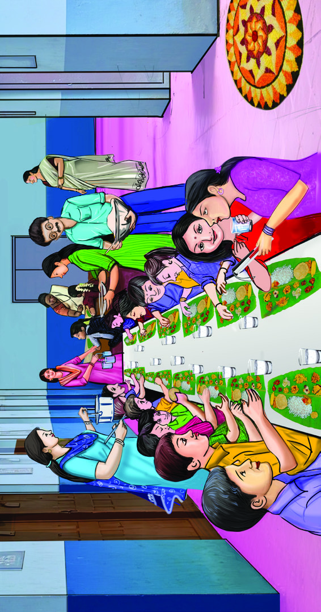
65
Social Science Class VI
Social Science Class VI
Culture and Cultural Diversities
There are diverse societies and cultures existing in the whole world. The culture of India
too is incredibly rich with diversity. Our country is home to a wide variety of religions,
castes, and tribal communities. Each one has its own distinct traditions and culture.
Similarly, a remarkable diversity of languages also exists in India.
Let's make a poster that includes the cultural features of different countries.
Form into groups. Each group selects one card from the cards with names of
different countries written on them. Prepare and present a poster based on the
cultural features given below with the help of reading materials and internet.
You’ve realised that cultures around the world are different. Culture has many features
like this. Let’s see what they are.
Features of Culture
1. Culture is Learnt
Onam is one of the major festivals
in Kerala. You celebrate Onam in
school, don't you?
What are the preparations made for
Onam celebration?
•
•
•
•
• Find out how many languages are printed on
our currency notes.
• Enquire about which languages are included in
the Constitution of India.
Fig 5.1
Fig 5.2
• Traditional Clothing
• Traditional Food
• Entertainments
• Festivals
• Language
• Inventions
Page 66

Social Science Class VI
Social Science Class VI
66
Part I
From where did you learn all these things?
•
•
•
•
Culture is not something, that is innate; we acquire culture through the process of
socialisation that happens through interactions with family, school, peers, and society.
We learn how to respect elders usually from our family. How to behave in society is learnt
from family, school, peers, and the society. Culture plays an important role in shaping
society and individuals. Enculturation is an individual's learning and habitualising their
own culture.
What are some of the cultural practices you’ve learnt?
• Standing up during the National Anthem.
•
•
•
2. Culture is Shared
In school, you eat together with your friends while celebrating Onam Feast, don't you?
What are the specialities of ''Onam Feast''?
• People from all sections of society sit together and have food.
•
•
Is Onam Feast simply about having food?
It is also about the gathering of people from different walks of life. Common traditions,
such as eating food served on banana leaves while sitting on the floor is part of Onam.
It fosters a sense of unity and social participation. Culture is collectively received and
transmitted through food and celebrations. In this manner, culture is shared among
members of society.
Collect pictures of festivals in your area (carnival, agricultural fairs, film festival,
literature festivals etc.) and prepare a wall magazine with cultural features.
3. Culture is Symbolic
What all symbols do you know, that represent our nationalism?
• •
National Anthe
National Anthem
m
•
•
•
•
•
•
Page 67


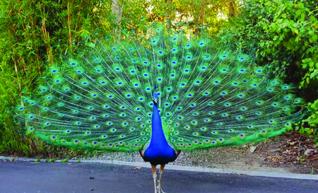


67
Social Science Class VI
Social Science Class VI
Culture and Cultural Diversities
Observe the above picture. These are some of the symbols of Indian nationalism and
culture. National Anthem, National Flag, patriotic songs and so on evoke a feeling of
nationalism in us. Nationalism represents patriotism and national unity. Similarly, symbols
such as language, gestures (like folding hands when meeting adults or guests), and objects
(such as monuments and religious symbols) are used to indicate culture. These symbols
help in nurturing culture and values.
Find the symbols used as part of culture in your area, note their characteristic
features. Prepare and display a wall magazine.
4. Culture is Dynamic
Listen carefully as grandmother shares the changes in the marriage practices, with her
grandchildren and friends who have come to attend her wedding anniversary.
“In my younger days, marriages were very
simple. My marriage took place in a “pavilion”
set up in the front yard. Only close relatives
and family members were invited. The food
was cooked by my relatives. At that time, more
attention was given to marriage ceremonies
and customs.
But, my granddaughter’s marriage was a grand celebration. A beautifully decorated and
spacious auditorium, with stage full of photographers and videographers. In our time,
marriages were just a one-day event. But today, what all new pre wedding celebrations
are there, like “haldi” and “mehandi” ceremonies. What all changes in the conduct of
marriages itself. An event management team was in charge of everything. There was
a separate team for cooking and catering services. The feast included dishes that I
had never even heard of. How much marriage ceremonies have changed from simple
customs...
Fig 5.3
Page 68
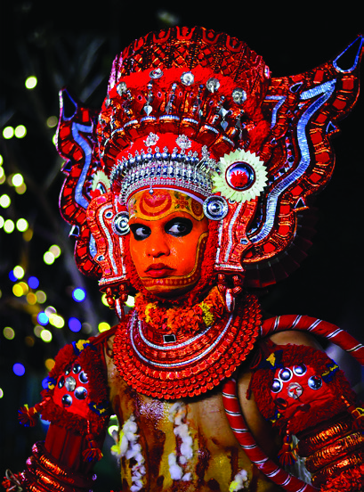


Social Science Class VI
Social Science Class VI
68
Part I
These pictures indicate the modern trends in marriage. Grandmother has mentioned the
changes in marriage ceremonies. What are they?
• •
Marriage Reception
Reception
•
•
•
•
• •
•
•
•
•
Marriage is a social gathering where everyone including relatives, friends, and natives
participate. With the development of modern technology, ceremonies like marriages are
undergoing vast changes. As part of the extravaganza connected with marriage, lots of
new employment sectors developed and many people are getting employments. Do you
agree with this?
What are your thoughts on keeping ceremonies like marriages simple instead of
extravagant? Discuss.
Marriages have changed from simple customs to complex and expensive celebrations.
However, haven't you noticed that many traditional marriage customs are still followed
with changes? This shows how culture undergoes changes incorporating tradition and
modernity at the same time.
Does the development of new media influence food and clothing that are part
of our culture? Discuss in class and make notes.
Theyyam
Theyyam is a customary art form from northern Kerala. It
involves diverse rituals. The first ritual in Theyyam is 'Adayalam
Kodukkal', which involve scheduling the date for Theyyam and
preparing the artist to don the costume. The artist performing
Theyyam observes vrutham (vow) for one to seven days.
Theyyam is performed at ''Kaavu'' (sacred groves) and other
places once a year. The Theyyam that exists in modern times
are village sights that proclaim the continuity of customs and
cultural vibrancy.
4. Culture is Customary
Fig 5.4
Page 69


69
Social Science Class VI
Social Science Class VI
Culture and Cultural Diversities
You have read about the customs related to the performance of Theyyam. What are they?
•
•
•
•
Several ritualistic arts like Theyyam showcase the rich cultural tradition of Kerala.
Similarly, there are many traditional customs in our society. They are transmitted from
ancestors to new generations.
Conduct an interview (online or offline) with traditional artists to learn more
about customary arts like Theyyam. Prepare an interview questionnaire with
the help of your teacher.
Complete the concept map by identifying, to which cultural feature given
indicators are related to.
Indicators
• Customs of Padayani • Event Management • Athappookkalam • White
signifying peace • All sections of people having Onam feast together.
Culture
Culture
Learnt
Learnt
Dynamic
Dynamic
Shared
Shared
Symbolic
Symbolic
Customary
Customary
Page 70
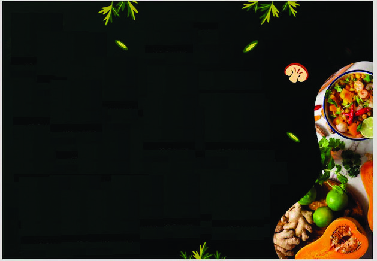
Social Science Class VI
Social Science Class VI
70
Part I
Cultural Changes
Haven't you noticed that culture is dynamic? Every society has culture. Culture is the guide
for the members of society. From time to time, elements of culture undergo changes. The
changes that occurred in our diet, clothing, family relationships and education systems
are examples of this. Cultural changes means the transformation that happens in both
material and non-material elements of culture across time.
Cultural change mainly occurs when one culture come into contact with other cultures.
These changes happen mainly in three ways.
1. Cultural Diffusion
Fresh and Neat
Fresh and Neat
Restaurant
Restaurant
Meals
Meals
Puttu
Puttu
Chapathi
Chapathi
Dosa
Dosa
Appam
Appam
കബാാബ്
കബാാബ്
Naan
Naan
Chicken Curry
Chicken Curry
Al Faham
Al Faham
Manthi
Manthi
Soup
Soup
Puri Masala
Puri Masala
Chicken Tandoori
Chicken Tandoori
Paneer butter masala
Paneer butter masala
Egg Noodles
Egg Noodles
Vegetable sandwich
Vegetable sandwich
A menu of various food items is given in the picture.
Which of these are non-Kerala dishes?
It can be seen that along with Kerala's traditional cuisine, dishes from other regions too
are mixed with our food culture.
Cultural diffusion refers to the spread of unique aspects of one culture into another. This
happens when different cultures interact with each other . This diffusion can happen from
one culture to another and vice versa. As the number of guest workers in Kerala increased,
their food items also became widely available here. Examples are panipuri, paneer tikka,
and dal makhani. Similar changes can be observed in clothing, language and festivals too.
Cultural diffusion occurs when different cultures interact in a friendly manner.
Fig 5.5
Page 71
71
Social Science Class VI
Social Science Class VI
Culture and Cultural Diversities
Find other examples of cultural diffusion and discuss them in class.
2. Acculturation
Rithi celebrated Onam with us after celebrating Teej in her village. Along with learning her
own culture, Rithi is also learning about the culture of another place. Learning another
culture like this is acculturation. Partial changes to one’s own culture happen due to the
influence of another culture. At the same time many of its original elements are sustained.
Have you had a similar experience?
Find out more examples of acculturation.
3. Cultural Assimilation
Vinu and family migrated from Kerala to Australia five years ago. After four
Vinu and family migrated from Kerala to Australia five years ago. After four
years of permanent residence there, they got Australian citizenship. In the
years of permanent residence there, they got Australian citizenship. In the
beginning, they struggled to accommodate to the climate, language, social
beginning, they struggled to accommodate to the climate, language, social
practices, and food habits of that place. Gradually, they accommodated to
practices, and food habits of that place. Gradually, they accommodated to
Australian cultural practices.
Australian cultural practices.
You have read about Vinu’s experience of moving from Kerala to Australia for work. What
all aspects of the local culture did Vinu and family have to accept?
•
•
•
To live in Australia, Vinu, had to learn the local language, food habits, and other cultural
practices. In this way, Vinu who is a Keralite, was forced to change to the culture of
Australia. In this manner, one way of living and culture are assimilated into a dominant
culture and way of living. Cultural Assimilation happens when one culture subordinates
another culture in this way. Through this, the unique features of one culture are gradually
lost and the ways of another culture replace it.
Acculturation and cultural assimilation are cultural changes that occur when different
Page 72


Social Science Class VI
Social Science Class VI
72
Part I
Rithi’s family lives in
Kerala and accommodates
to the dominant culture of
Kerala while maintaining
their
own
cultural
practices. Acculturation
occurs when individuals or groups
accommodate to the dominant culture
while maintaining their own culture.
Vinu and family changed
from their own culture
and fully assimilated
the dominant culture
of Australia. Cultural
assimilation happens when individuals or
groups are completely absorbed into the
dominant culture.
Prepare a script for a story that illustrates acculturation and cultural assimilation,
and present it as a role play in the class.
Wood Stove
Wood Stove
Kerosene Stove (wick)
Kerosene Stove (wick)
Kerosene Stove
Kerosene Stove
(pressure)
(pressure)
Oven
Oven
Induction Stove
Induction Stove
Gas Stove
Gas Stove
Different Types of Stoves
Acculturation, cultural assimilation, and cultural diffusion happen due to the influence of
internal factors within a society. However, external factors also cause cultural changes.
Cultural Innovations and Environmental Changes are external factors that cause cultural
changes. Let’s examine how these external factors cause cultural change.
Cultural Innovation and Cultural Change
Observe the picture.
cultures come into contact. But they differ in how individuals accommodate to a dominant
culture. Let's see how it is.
Fig 5.6
Page 73
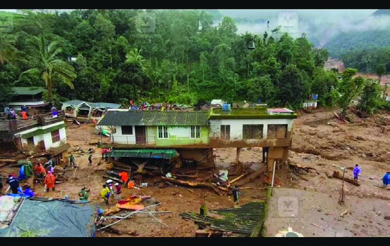
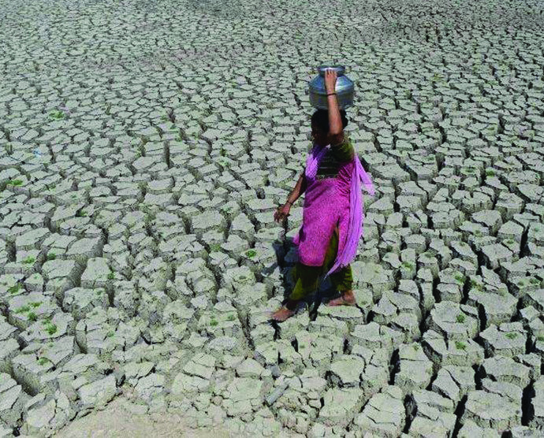


73
Social Science Class VI
Social Science Class VI
Culture and Cultural Diversities
Pictures of various types of cooking stoves are given. With the development of technology
the design of stoves and cooking methods have changed. This influenced our food culture
significantly. Developments in technology lead to cultural innovations. Haven't you noticed
how online systems are used more to purchase food today.
Landslides, droughts, floods, and rising sea levels often create situations that force people
to leave their native place and move elsewhere. This changes their daily lives. Thus,
environmental factors like natural disasters and climate change can bring about significant
cultural changes.
Cultural Changes
Cultural Changes
Internal Factors
• Cultural diffusion
• Acculturation
• Cultural assimilation
• Cultural innovations
• Environmental changes
External factors
Find more examples of how technological progress has driven cultural
innovation, collect pictures, and prepare an album/digital album.
Environmental Changes and Cultural Changes
Fig 5.7
Do changes in the environment reflect in human life? Observe the picture.
Page 74


Social Science Class VI
Social Science Class VI
74
Part I
Culture is a dynamic and integral part of human life. Culture shapes a society. The
beauty and the goodness of social life lies in the coexistence of people from diverse
cultures. Therefore, it is essential to respect and tolerate different cultures and promote
cultural harmony.
Arrange the given news headlines related to cultural changes in the table.
(Enter the number)
1. Government to build townships for those who lost their homes in natural
calamities.
2. Government scheme for kitchen renovation for all BPL families.
3. Malayalis also celebrate Holi by splashing colours
4. Increase in number of Malayalis acquiring foreign citizenship.
5. Guest workers celebrating both Holi and Onam.
• Prepare a collage that reflects the food, dress, and traditions of various cultures.
• Divide into groups and present a skit based on any festival.
• Organize a cultural festival at school to represent different cultures. Ensure
the participation of students from outside Kerala and abroad in the cultural
gatherings and discussions.
Extended Activities
Internal Factors
External Factors
Cultural Diffusion
Cultural Diffusion
Environmental Change
Environmental Change
Acculturation
Acculturation
Cultural Innovation
Cultural Innovation
Cultural Assimilation
Cultural Assimilation